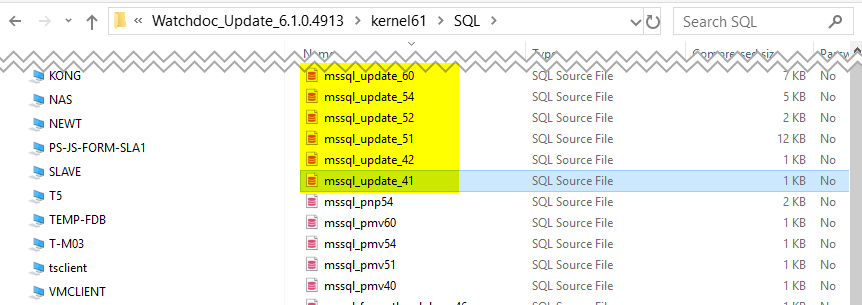
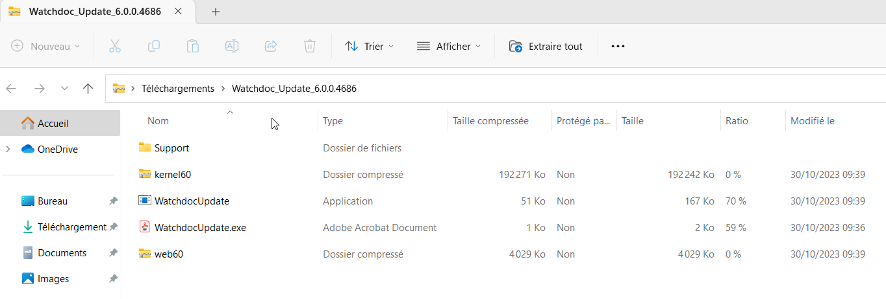
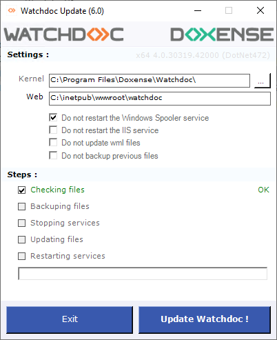
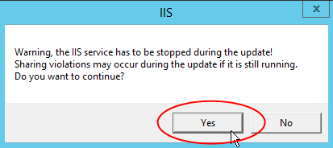
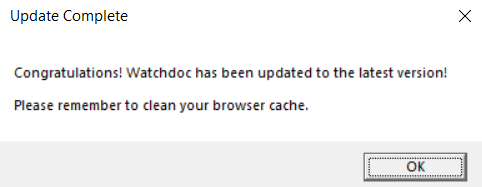
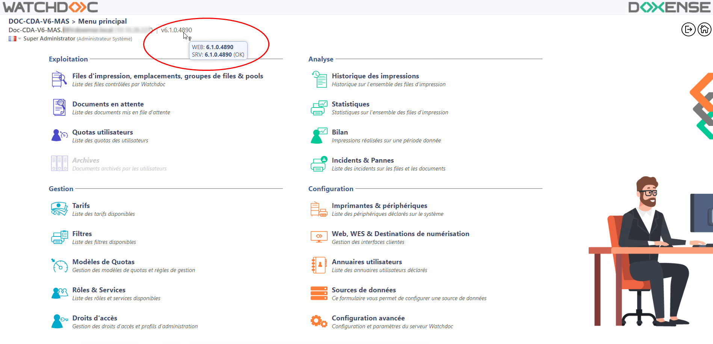
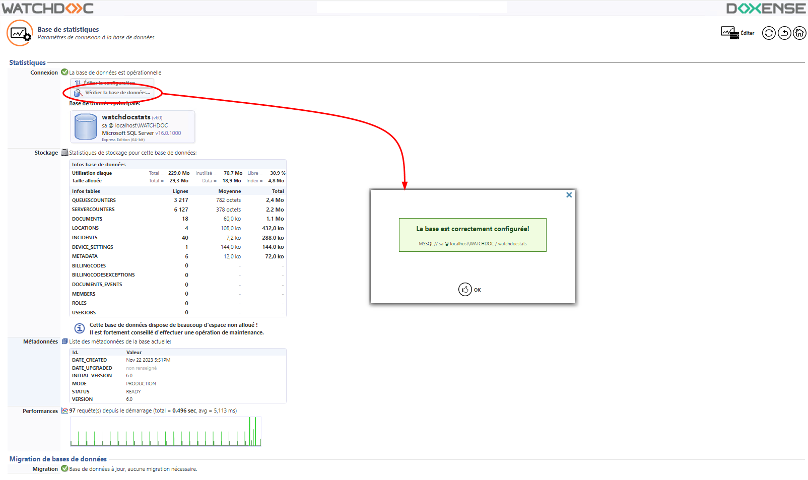
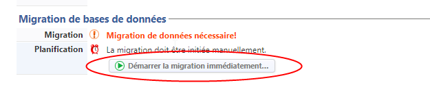

Watchdoc - Procédure de mise à jour
Etape 1 - Préparer la mise à jour
-
Téléchargez le package d'installation de la nouvelle version depuis la page dédiée.
-
Dans le serveur d'impression Watchdoc, créez un dossier temporaire (C:\TEMPWD) permettant d'extraire les fichiers de l'archive.
-
Copiez l'archive Watchdoc_Update_XX.zip dans le dossier C:\TEMPWD et décompressez-le (clic droit > extraire tout) dans le répertoire proposé par l'outil d'extraction.
-
Vérifiez le contenu du dossier décompressé.
-
KernelXX.zip : contient les nouveaux fichiers pour le service Watchdoc ;
-
WatchdocUpdate.exe : exécutable pour la mise à jour ;
-
WatchdocUpdate.exe.config : fichier contenant le fichier de configuration de l'exécutable ;
-
WebXX.zip : contient les nouveaux fichiers pour le site web Watchdoc :

-
Si vous utilisez WEScan et avez personnalisé les profils de scan directement dans le dossier des profils par défaut (fichiers JSON), faites-en une sauvegarde que vous pourrez rétablir après la mise à jour passée. Ce dossier est en effet écrasé au cours de la mise à jour. Pour information, il est recommandé de créer un dossier spécifique pour les profils personnalisés (cf. Utiliser ScanProfilesCustomizer).
Etape 2 - Mettre à jour la base de données
Rendez-vous dans le dossier où ont été extraits les fichiers de l'archive.
-
Décompressez le dossier kernelXX.
-
Dans le dossier kernelXX, ouvrez le dossier SQL.
-
En fonction du type de votre base de données (MSSQL, PostgreSQL ou SQLite), repérez le fichier ou les fichiers de mise à jour [type_bdd]_update-XX.
Si vous mettez à jour depuis une version 6.0, il n'est pas nécessaire de mettre à jour la base de données.
Si vous mettez à jour depuis une version antérieure à la 6.0, effectuez la mise à jour par étapes : depuis le dossier Kernel[n°version].zip\SQL, exécutez toutes les mises à jour de versions [Type_bdd]_update_[version] comprises entre la version installée dans votre environnement et la nouvelle version.
La base de données SQLServer peut être mise à jour avec deux outils :
-
avec l'outil MS SQL Server Management Studio® :

-
avec l'outil en ligne de commande sqlcmd intégré à la base de données.
Exemple de commande pour exécuter un script de mise à jour :
sqlcmd -S localhost\watchdoc -U sa -d watchdocstats -i mssql_update_XX.sql -o QueryResults.txt -e-
-S : nom du serveur SQLServer
-
-U : login
-
-d : nom de la base de données
-
-i : nom du script à exécuter
-
-o : fichier de sortie
-
-e : ajout les commandes exécutées dans le fichier de script
-
Etape 3 - Mettre à jour Watchdoc
-
Dans le dossier où ont été décompressés les fichiers, double-cliquez sur WatchdocUpdate.exe pour lancer l'exécutable de mise à jour :

-
Approuvez le message qui vous informe qu'une nouvelle clé de licence est nécessaire.
-
Dans l'interface affichée, vérifiez les chemins d'accès des paramètres, puis cliquez sur le bouton Update Watchdoc ! :

→ Un curseur indique la progression de la mise à jour.
-
Si vous n'avez pas coché les cases empêchant leur redémarrage, le service IIS et le spouleur sont arrêtés puis redémarrés.
-
Confirmez le redémarrage du service IIS dans la boîte de dialogue affichée :

→ un message vous informe de la fin et du succès de la mise à jour :

Etape 4 - Vérifier la mise à jour
-
Dans la page d'accueil de l'interface web d'administration de Watchdoc, vérifiez que le numéro de version a été mis à jour :

-
Dans l'interface web d'administration de Watchdoc, vérifiez que la nouvelle version de Watchdoc parvient toujours à communiquer avec la base de données (Menu principal, section Configuration > Configuration avancée > Base de statistiques) :
-
cliquez sur Editer la configuration ;
-
cliquez sur Vérifier la base de données.
→ un message vous indique si Watchdoc parvient à contacter la base de données :

Etape 5 - Migrer les données
Le schéma de la base de données de Watchodc 5.4 et 6.0 a été modifié. Si vous partez d'une version antérieure à la v5.4, il est donc nécessaire d'effectuer une migration des données lors de la mise à jour.
Cette migration doit être effectuée de manière progressive, par étape. Ainsi :
-
si Watchdoc 6.0 est installé chez vous, il n'est pas nécessaire de migrer les données ;
-
si Watchdoc 5.4 est installé chez vous, exécutez la migration de la v5.4 vers la v6.0 ;
-
si Watchdoc 5.1 est installé chez vous, exécutez la migration de la v5.1 vers la v5.4, puis de v5.4 vers v6.0.
Pour procéder à la migration des données :
-
dans l'interface d'administration de Watchdoc, depuis le Menu Principal, section Configuration > Configuration avancée > Base de statistiques.
-
Dans la section Migration des bases de données, cliquez sur Démarrer la migration immédiatement :

-
Réitérez l'opération tant que le message "Migration de données nécessaire" s'affiche ;
-
Lorsque le message Base de données à jour, aucune migration requise s'affiche, la migration est terminée.
Etape 6 - Mettre à jour les autres serveurs du domaine
Si Watchdoc est installé dans un domaine (configuration master/slaves), il est nécessaire de mettre également à jour les serveurs slaves.
Pour les versions antérieures à v6.1, mettez à jour chaque serveur slave qui dépend du master en suivant la procédure ci-dessus.
Une fois la v6.1 installée dans votre domaine, vous pouvez procéder à la mise à jour vers les versions supérieures à l'aide de l'updater de WSC : cet outil permet de propager et d'appliquer les mises à jour sur les serveurs du domaine une fois le master actualisé (cf. Mise à jour d'un domaine).